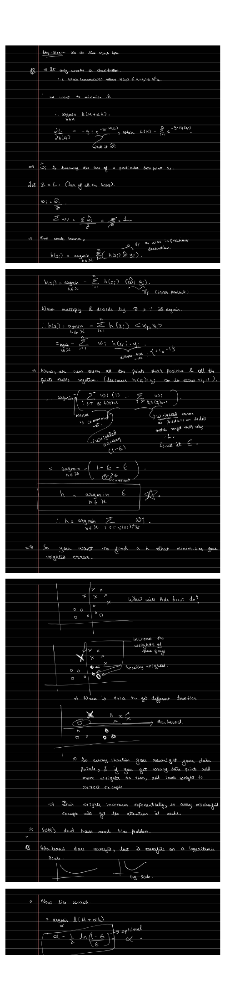

Boosting & AdaBoost
Bagging (Part 5) reduced variance by averaging independent trees. Boosting does the opposite job: it reduces bias by adding trees in sequence, each one correcting the errors of the ensemble so far. The surprise is that this sequential process is exactly gradient descent, just carried out in the space of functions.
An Additive Model Built Like Gradient Descent
Boosting builds a strong learner as a weighted sum of weak ones (classifiers with high bias, such as shallow trees):
$$H(x) = \sum_{t=1}^{T} \alpha_t\, h_t(x).$$The classifiers are added in small steps, iteratively, like gradient descent, so the ensemble creeps toward the target prediction. At each step the goal is to add the one classifier from the family that most reduces the training loss:
$$h = \arg\min_{h \in \mathcal{H}} L(H + \alpha h).$$Boosting Is Gradient Descent
Taylor-expand the loss around the current ensemble $H$:
$$L(H + \alpha h) \approx L(H) + \Big\langle \tfrac{\partial L}{\partial H},\; \alpha h \Big\rangle = L(H) + \alpha\sum_i \frac{\partial L}{\partial H(x_i)}\, h(x_i).$$The term $L(H)$ is constant, so minimizing over $h$ means minimizing the inner product $\langle \partial L / \partial H,\, h\rangle$. With the length of $h$ fixed, that inner product is smallest when $h$ points in the direction of the negative gradient. For the squared loss $L = \tfrac12\sum_i (H(x_i) - y_i)^2$,
$$\frac{\partial L}{\partial H(x_i)} = H(x_i) - y_i \quad\Longrightarrow\quad -\frac{\partial L}{\partial H(x_i)} = y_i - H(x_i),$$which is just the residual. So the best next weak learner is the one that best fits the residuals:
$$h = \arg\min_{h\in\mathcal{H}} \sum_i \big(h(x_i) - t_i\big)^2, \qquad t_i = y_i - H(x_i).$$Boosting is just gradient descent, with each step taken by a tree instead of a number.
Gradient-Boosted Trees
For regression labels $y \in \mathbb{R}$, take each weak learner to be a CART tree of limited depth (typically $d = 4$ to $6$) and use a small constant step $\alpha$:
Each tree mops up what the previous ensemble got wrong. A handful of shallow trees, added this way, becomes a low-bias predictor.
AdaBoost
AdaBoost is the same idea specialized to classification with one particular loss, the exponential loss, with labels and weak predictions in $\{-1, +1\}$:
$$L(H) = \sum_{i=1}^{n} e^{-y_i H(x_i)}.$$The gradient at point $i$ is proportional to $\hat w_i = e^{-y_i H(x_i)}$, the current loss of that point. Normalize them into a distribution, $w_i = \hat w_i / Z$ with $Z = \sum_i \hat w_i$ so that $\sum_i w_i = 1$. Following the inner-product minimization through, the best weak learner is the one that minimizes the weighted error:
$$\varepsilon = \sum_{i:\, h(x_i)\neq y_i} w_i, \qquad h = \arg\min_{h\in\mathcal{H}} \varepsilon.$$A line search for the step size has a closed form, the optimal coefficient being
$$\boxed{\;\alpha = \tfrac12 \ln\!\frac{1-\varepsilon}{\varepsilon}\;}$$After adding $\alpha h$, the weights are updated multiplicatively: correctly classified points ($y_i h(x_i) = +1$) get their weight shrunk, and misclassified ones ($y_i h(x_i) = -1$) get it grown:
$$w_i \;\leftarrow\; \frac{w_i\, e^{-\alpha\, y_i h(x_i)}}{2\sqrt{\varepsilon(1-\varepsilon)}}.$$Because the weights of the hard points grow exponentially, every repeatedly-misclassified example eventually gets the attention it needs. The animation runs AdaBoost on a small dataset, growing the dots of misclassified points and watching the training error fall.
▶ AdaBoost: Reweighting the Hard Points
Nine points carry labels $+1$ (green) / $-1$ (orange). Each round picks the stump (dashed line) with least weighted error $\varepsilon$, sets $\alpha = \tfrac12\ln\frac{1-\varepsilon}{\varepsilon}$, then grows the dots it got wrong. The ensemble's training error drops toward zero.
The AdaBoost Algorithm
Why It Converges
The exponential loss is an upper bound on the 0/1 training error, because $e^{-y_i H(x_i)} \ge \mathbf{1}[\,H(x_i)\neq y_i\,]$ term by term:
$$L(H) = \sum_i e^{-y_i H(x_i)} \;\ge\; \sum_i \mathbf{1}[\,H(x_i)\neq y_i\,] = \mathrm{Err}(H).$$If every weak learner beats chance by a margin $\gamma$ (its error is at most $\tfrac12 - \gamma$), the loss shrinks geometrically:
$$L(H) \;\le\; n\,(1 - 4\gamma^2)^{T/2},$$which drops below $1$, forcing zero training error, once $T > O(\log n)$. AdaBoost keeps pushing past that point, increasing the margin, which is why it behaves like a large-margin classifier and overfits only slowly, on a logarithmic scale.

That closes the arc the series set out on: a single tree is an unstable, high-variance learner, but averaging many trees (bagging, random forests) tames the variance, and adding many in sequence (boosting, AdaBoost) tames the bias. Terrible alone, excellent in committee.